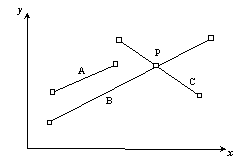
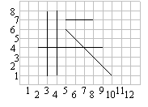

Intersecting line segments
Background
In a 2-D Cartesian space, a straight line segment A is defined
by two points A0=(x0,y0), A1=(x1,y1).
The intersection of line segments A and B (if there is one),
together with the initial four points, defines four new line segments.
In Figure 1.1, the intersection P between lines B and C
defines four new segments. As a result, the toal amount of line segments after
the evaluation of intersections is five.

Figure
1.1 - Intersections of line segments
Given an initial set of lines segments, determine the number of line segments resulting from the
evaluation of all the possible intersections.
It is assumed, as
a simplification, that no coincidences may occur between coordinates of singular
points (intersections or end points).
The input begins with a single positive integer on a line by itself indicating the number of the cases following, each of them as described below. This line is followed by a blank line, and there is also a blank line between two consecutive inputs.
The first line of the input contains the integer number N of line segments. Each of the following N lines contains four integer values x0 y0 x1 y1,separated by a single space, that define a line segment.
Output For each test case, the output must follow the description below. The outputs of two consecutive cases will be separated by a blank line.
The integer number of lines segments after all the possible intersections are evaluated.
Sample Input
1
5
3 1 3 8
4 1 4 8
2 4 9 4
8 7 5 7
5 6 10 1
Sample Output
11
Note: Figure 1.2 corresponds to the sample above.

Figure 1.2 - Example